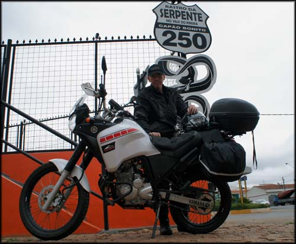
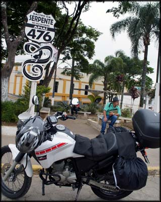
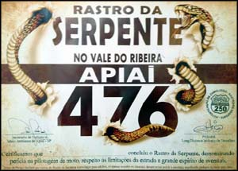
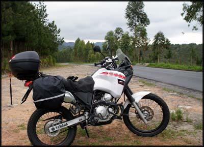
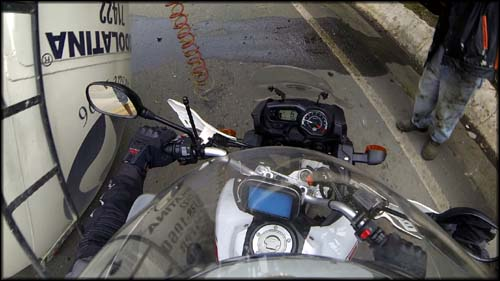
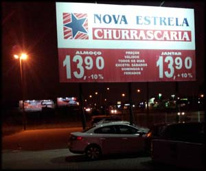
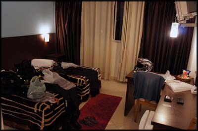
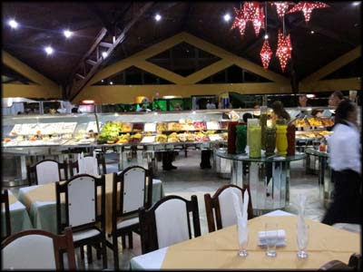

Saí da casa de meus parentes em Sorocaba/SP lá pelas 10:00h, completei o tanque da motoca (560 Km rodados) e parti para Capão Bonito pela Rodovia Raposo Tavares (SP-127) e BR-373. O asfalto deste trecho está bem novo, na verdade estavam refazendo uns pedaços ainda, e passei por várias obras de recapeamento.
Cheguei em Capão Bonito por volta de 12:00h, o tempo estava esquisito, já parei para abastecer (713Km rodados) e vestir a roupa de chuva. Me informei em um posto de gasolina sobre como ir para Apiaí, dei algumas voltas na cidade procurando a placa que indicava o início do Rastro da Serpente, mas não encontrei, e desisti de procurar sozinho. Parei em outro posto de gasolina e perguntei pela placa a um motociclista local que estava passando. Ele pensou um pouco, como se não soubesse do que eu estava falando, mas logo teve um estalo e apontou "aquela placa ali?". Hehe estava quase na minha frente, a menos de 200 metros, e eu não tinha visto.
Fui lá na placa onde queria tirar uma foto, registrei o momento, e parti em direção a Apiaí ainda pela BR-373.
Em Capão Bonito/SP, na placa que marca o início do Rastro da Serpente
Realmente a estrada é bem bacana, várias curvas boas de se fazer com a moto, e paisagens belíssimas. O tempo estava nublado, mas nem isso tirava a beleza natural do lugar. Foi um dos trajetos que eu mais curti fazer durante toda a viagem, no quesito diversão na pilotagem.
Placa do outro extremo do Rastro da Serpente, em Apiaí
Cheguei a Apiaí, encontrei a outra placa do Rastro da Serpente, outra foto. Fui no posto de gasolina em frente, aonde tinha lido que vendiam uma lembrança da estrada, num marketing criado por algum motoclube, não sei ao certo. Comprei o tal certificado de passagem por R$ 10,00, uma lembrança legal, ficará bacana para enfeitar a parede.
Certificado vendido no posto de gasolina
Pensei em almoçar em Apiaí, mas estava com medo de chegar muito tarde em Curitiba e ainda iria procurar hospedagem. Decidi continuar em direção às cidades de Ribeira e Adrianópolis, e depois Bocaiuva do Sul, já no Estado do Paraná.
Rastro da Serpente, asfalto novo e muita diversão deitando nas curvas
Quando passei de Ribeira, ultrapassei alguns carros parados na estrada, e logo depois levei um susto, e pensei, "agora ferrou tudo...". Um caminhão tanque (não sei que líquido transportava) havia tombado na estrada, e ficou atravessado, de ponta a ponta, interrompendo o trânsito. Não passava mais nada.
O caminhão estava capotado bloqueando a estrada. Mas logo que me aproximei ,os caminhoneiros que estavam lá fizeram sinal pra mim, dizendo "dá pra passar com a moto!", e apontando para o vão que ficou por baixo da cabine, que estava escorada no barranco. Não pensei duas vezes, fui com a moto me inclinando, me abaixei e passei por baixo do caminhão capotado, enquanto os caras puxavam para os lados uns fios e mangueiras de freio que ficaram pendurados. Que maluquice haha aquele troço poderia ter caído a qualquer momento, vai saber... Mas se eu ficasse lá preso no tráfego como os outros carros e caminhões, sabe lá que horas eu chegaria em algum lugar com hospedagem!?
Passando por baixo do caminhão capotado, maluquice...
Olhando hoje o vídeo feito com a GoPro, infelizmente essa cena de aventura ficou uma bosta. Nessa de prende e tira câmera do capacete, posicionei mal a maledicta, e só filmou o chão... uma pena, queria ter essas imagens.
Depois disso, segui viagem, e demorou mais do que eu esperava. Cheguei em Curitiba já de noite, umas 20:30. Trânsito dos infernos nas rodovias por fora da cidade, muitas obras, muitos caminhões, chuva chata. Motoristas nervosos, jogando o carro em cima, estava perigoso, e eu estava esgotado. Tentei me encontrar com o GPS Foston que a esta altura já tinha parado de funcionar, porcaria chinesa. No meio daquele sufoco, decidi ir seguindo pela rodovia buscando me achar, mas não via placa de sinalização alguma. Até que avistei um prédio isolado ao lado da estrada. Era um hotel com uma churrascaria em frente.
Churrascaria em frente ao hotel
Imaginei que seria uma hospedagem bem cara, pelo estilo do prédio e dos carros que estavam lá estacionados. Me abriguei da chuva em frente ao hotel, e pesquisei no celular o endereço de algum hostel ou hospedagem barata. Olhava no GPS, não havia nada perto…
Percebi que estava ferrado mesmo, e resolvi entrar no hotel para perguntar o preço. A churrascaria na frente tinha rodízio de carnes e buffet por R$ 13,90, o que já me era um grande atrativo hehe no Rio de Janeiro não existe mais rodízio por menos de R$ 60,00. Entrei no hotel e me informei. R$ 99,00 o pernoite. Era mais do que eu planejava pagar de hospedagem naquela região, mas dado as circunstâncias, resolvi ficar lá mesmo, no Hotel Dunamys.
Quarto bom, hotel de primeira qualidade
Depois do ritual de desamarrar a bagagem da moto e recolher tudo, subi para o quarto, muito bom, amplo e confortável. Um merecido banho quente, e desci para ir à churrascaria Nova Estrela. O buffet era bem fraquinho, mas aceitável, as carnes servidas também eram boazinhas, mas só vendia cerveja ruim. Fiquei num refrigerante mesmo, uma pena, a única noite de toda a viagem sem a "cerveja da vitória" para comemorar a etapa cumprida.
Mesa de Buffet do rodízio, nada excepcional, mas pelo preço compensou muito
Eu não estava gostando do comportamento da moto na estrada, ela não estava desenvolvendo velocidade da forma habitual. Como eu tinha feito duas semanas antes a revisão de 10 mil quilômetros na Yamaha, não era para haver esse tipo de problema. Nessa revisão o manual manda trocar a vela de ignição, e me parecia óbvio que eles não trocaram, para variar… no dia seguinte iria procurar uma concessionária da marca para ver o problema.
Alimentado após o razoável rodízio, voltei para o hotel para checar na internet e nos mapas para onde eu iria no dia seguinte. Pensava se iria parar em Florianópolis na ida ou na volta, para beber uma cerveja com um amigo que está morando lá. Mas descobri por acaso que estava rolando a Oktober Fest em Blumenau, e vi no site do evento que era o penúltimo dia. Iria tentar achar vaga na cidade e participar uma noite do festival de cervejas que eu sempre pensei em ir? Fui dormir sonhando com a oportunidade que caiu no meu colo.